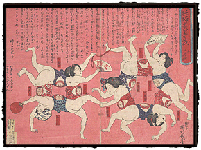

|
Women's Health
by Laura W. Allen
A number of the prints in the collection deal with women's health, including some vivid depictions of pregnancy. At the beginning of the Meiji era, the bunmei kaika, or "civilization and enlightenment" movement, introduced a more scientific outlook in many areas of Japanese life, including attitudes toward pregnancy and childbirth. Anatomical drawings from the West, available widely for the first time, provided models for the representation of such themes as the stages of fetal gestation.
In a set of five red spheres at the left are the different presentations at delivery: at top, in a slightly larger circle, is the typical cephalic (head-first) presentation, followed by shoulder presentation (the arm emerges first), multiple birth (twins), footling breech, complete breech, and the delivery of a breech baby. Prints like these must have created quite a sensation when they were produced, providing as they did the latest, up-to-date scientific information. "Pregnant women playing in summer heat - 5 heads with 10 bodies" is the title of another, more entertaining image of the stages of fetal development by Utagawa Kunitoshi (1847-1899). At first glance, it appears that this group of pregnant women is performing acrobatics in the nude; with the exception of a sash tied around the midriff of each woman, they are naked, though their genitals and breasts are artfully concealed. Upon closer inspection, one realizes that each head is attached to two bodies, and that the bodies are cleverly linked so that the lower bodies each appear to be shared by two women. Connecting these shared heads, arms, buttocks, and legs are ten torsos, each revealing an image of a growing fetus. The fan held by the woman at center says "five heads," and the abdomens are labeled from the first to the tenth month. Above the women is written further information about the course of pregnancy.
|
|||